Our Mission
A sanctuary of Bhakti, seva, and inner transformation.
Kripalu Padma Trust nurtures spiritual growth through satsang, sadhana, and service—preserving timeless wisdom and making it accessible to every sincere seeker.

Jagadguru Shri Kripalu Ji Maharaj
5th Original Jagadguru of the World | The Reconciler of All Scriptures
He appeared to drown the world in the ocean of Divine Love. His philosophy reconciles all contradictory views of world scriptures and reveals the simplest path to God realization: Raganuga Bhakti (Selfless Love).
The Divine Appearance
Appeared on Sharad Purnima night in Mangarh. From childhood, his divine radiance captivated everyone around him.
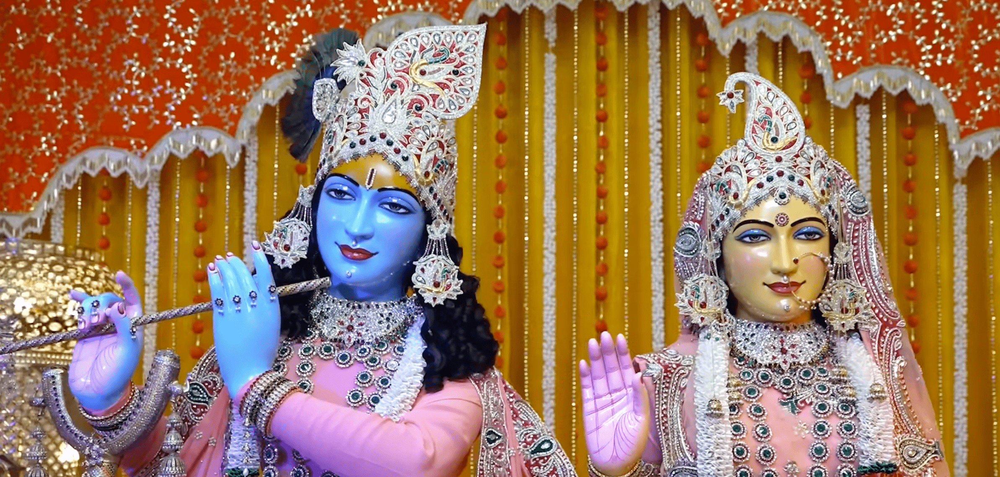
Honored as Jagadgurottam
At just 34 years old, the scholars of Kashi Vidvat Parishat unanimously honored him as the 5th Original Jagadguru.
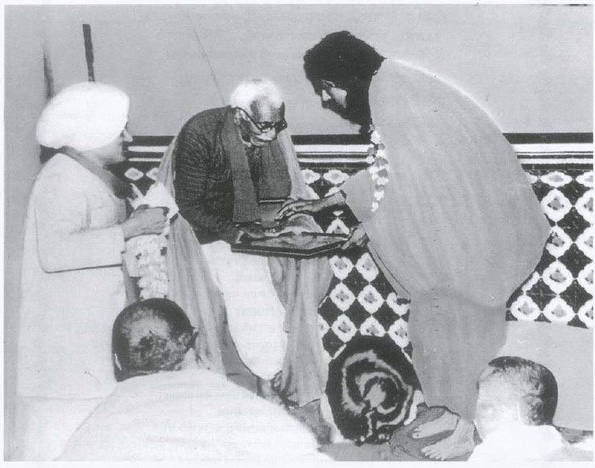
The Ocean of Knowledge
He gifted the world with monumental works like Prem Ras Madira and Radha Govind Geet, simplifying the Vedas for the common man.
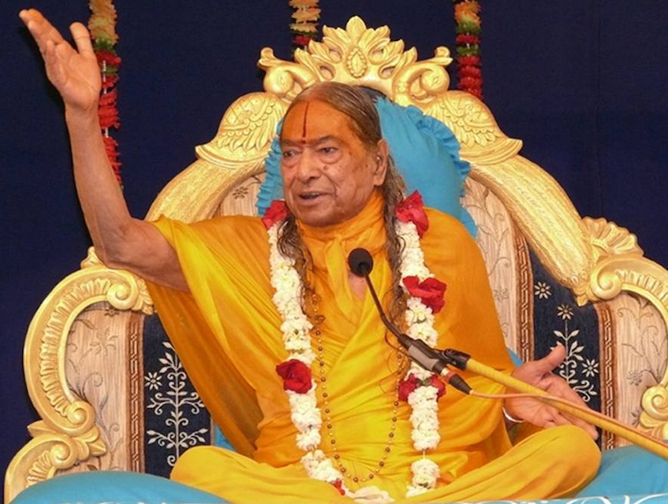
A Gift to the World
He established divine monuments like Prem Mandir (Vrindavan) and Kirti Mandir to preserve the glory of Bhakti for eternity.
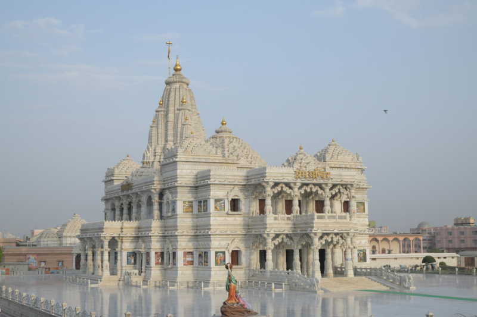
Sushri Braj Bhuvneshwari Devi Ji
The Reflection of Grace | Dedicated Pracharika
"In her conduct, speech, and every action, one sees only Shri Maharaj Ji."
She is the embodiment of surrender. Born to a family of devotees, she left worldly academia to
dedicate her entire life to distributing the nectar of Bhakti Yoga as per her Master's
command.
Divine Appearance
Appeared on September 22 in Lucknow, UP. Born into a divine family where her parents and siblings were already ardent devotees of Shri Maharaj Ji.
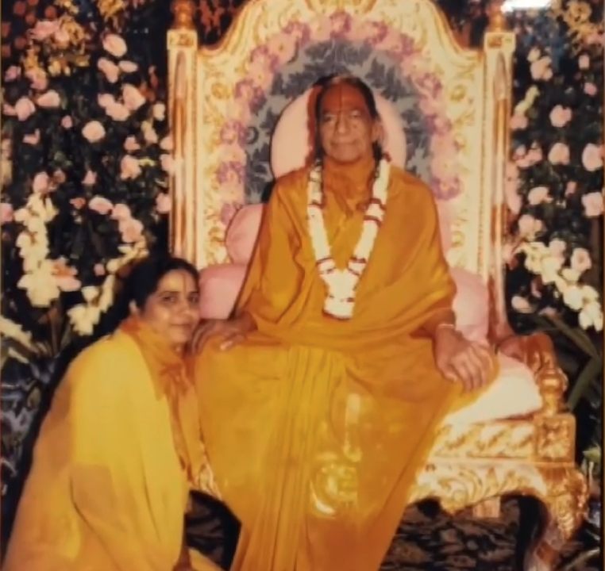
Education & Renunciation
She excelled in academics, completing her M.A. and M.Phil. However, while pursuing her Ph.D., the color of Sahaj Vairagya (Natural Renunciation) took over, and she left it midway to serve her Guru.
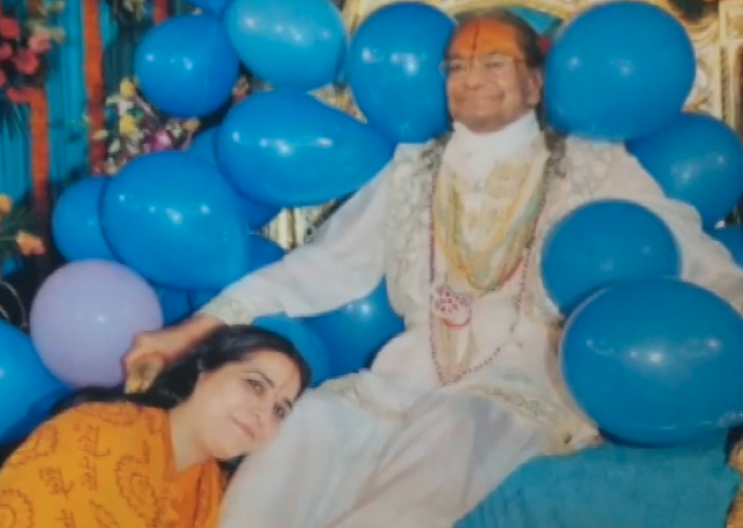
The Divine Command
On the auspicious day of Diwali, Shri Maharaj Ji formally declared her as his Pracharika and bestowed upon her the divine name "Braj Bhuvneshwari".
Kripalu Padma Trust
Following Maharaj Ji's order, she established her first divine center, Shri Kripalu Kunj in Bathinda (Punjab), creating a foundation for Satsang in the region.
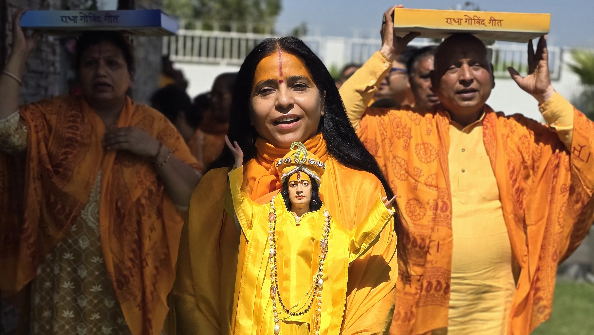
The Himalayan Vision
Expanding her mission, she established Radha Govind Dham in Chail, a sanctuary in the Himalayas for deep Sadhana and solitude.
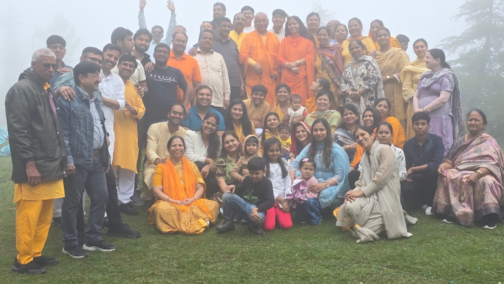
Seek Divine Guidance
Do you have spiritual doubts weighing on your heart?
Connect directly with Didi Ji to resolve your questions and find clarity on the path of
devotion.
Our Centers
From the vibrant plains of Punjab to the silent peaks of the Himalayas.
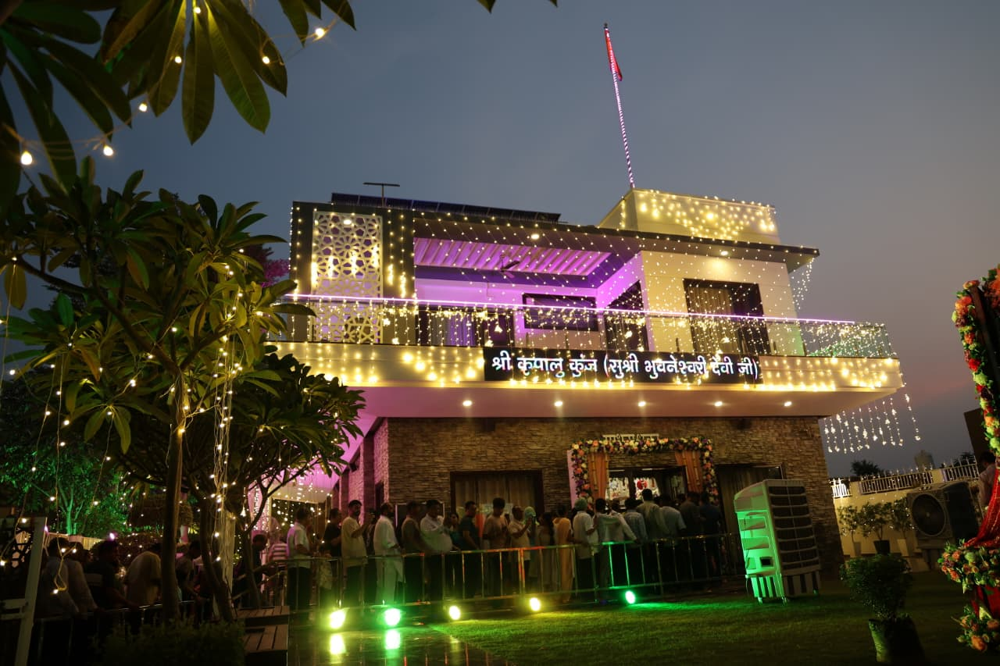
Shri Kripalu Kunj
The Trust's foundational center and vibrant community hub in the heart of Punjab. It serves as a beacon of devotion, hosting weekly Satsangs, grand festival celebrations, and selfless service initiatives.

Radha Govind Dham
A serene Himalayan sanctuary nestled at 6000ft, dedicated to deep silence and spiritual retreat. Far from the city's chaos, it provides a sacred environment for Sadhana Shivirs and Roop Dhyan meditation
Journey in Glimpses
A Living Tapestry of Seva & Satsang
Swipe through moments of devotion, community, and grace.
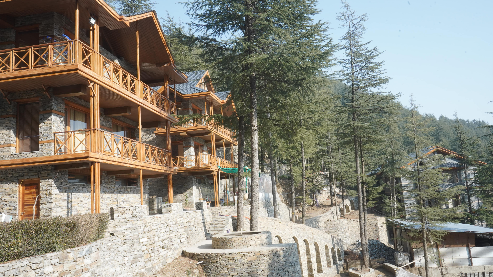
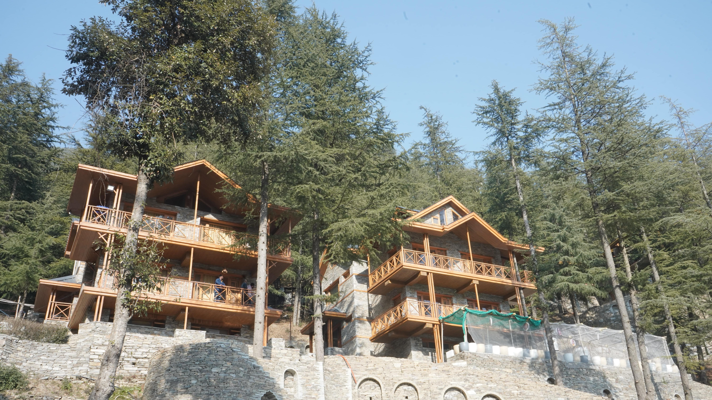
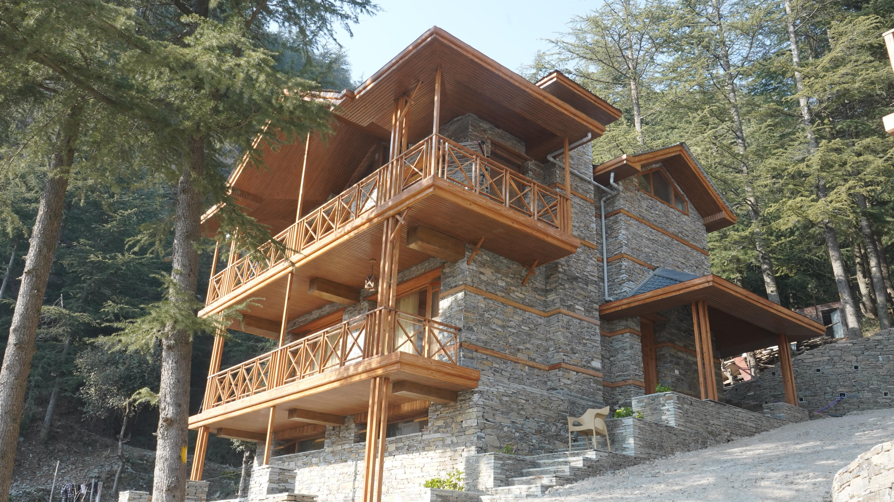

Where Your Offering Goes
A Transparent Gift of Seva
Every offering fuels daily worship, seva, and the sanctuary’s long-term growth.
Temple & Ashram Operations
Daily worship, upkeep, and resident care.
Prasadam & Community Seva
Food offerings and support for the community.
Shivir & Sadhana Programs
Retreats, satsang, and spiritual education.
Infrastructure & Maintenance
Facilities, repairs, and long-term growth.
The Gift of Seva
Become a Pillar of Support
"The wealth given in the service of God and Guru is the only true wealth."
Kripalu Padma Trust is rising solely through the love of devotees like you.
Your contribution is not just a donation; it is an offering that builds a sanctuary
for thousands of seekers,
feeds the hungry.
Transparency & Joy
Recent Divine Activities
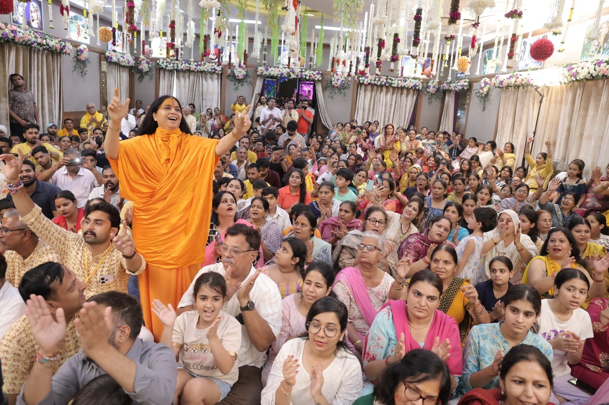
Janmashtami Celebration
Celebrating the divine appearance of Shri Krishna with immense joy. Devotees gather for midnight Aarti, continuous Kirtan, and a grand 'Abhishek', immersing themselves in the bliss of Braj Ras .
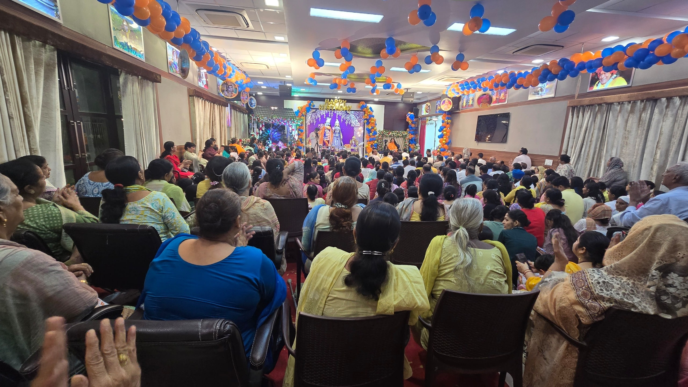
New Year Mahasatsang
Over 200 devotees gathered to start the year with the divine name of Radha Govind.
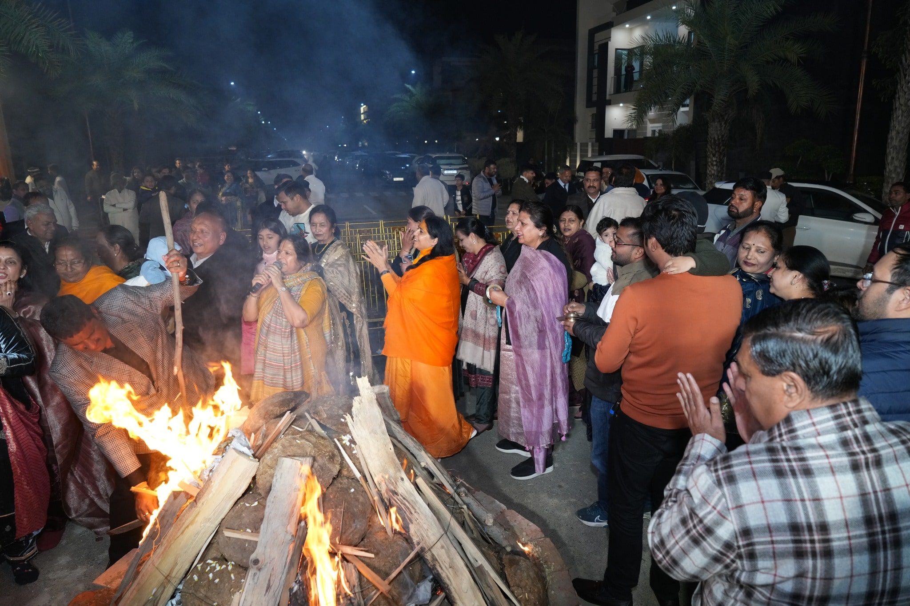
Lohri Celebration
Celebrating the warmth of devotion with the local community in Chail.
Trust Timeline
Highlights Since 2016
Expanded satsang outreach across North India and strengthened seva initiatives.
Major facility improvements at Shri Kripalu Kunj to support growing devotees.
Dedicated programs for youth sadhana and community service momentum.
Expanded Himalayan retreat activities and winter seva drives.